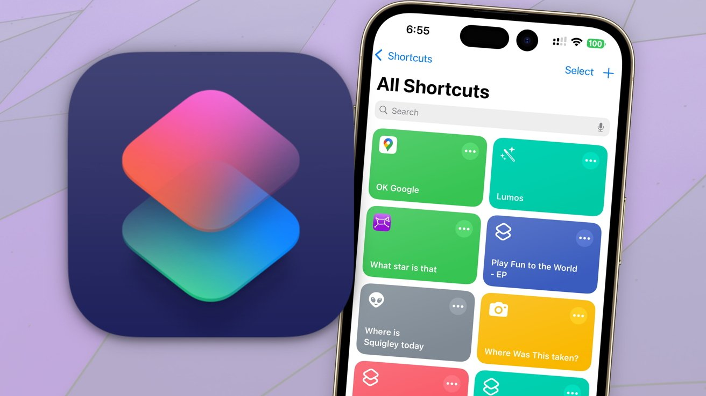
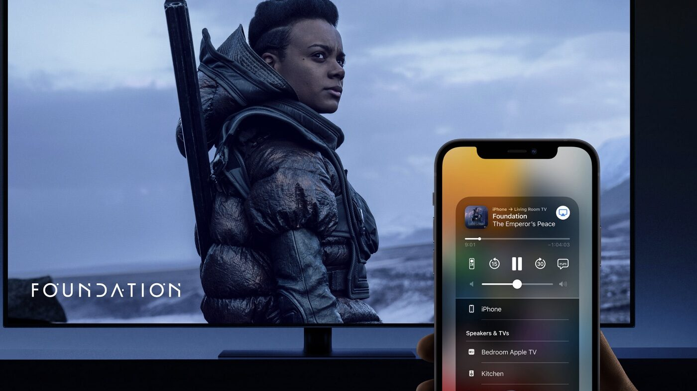
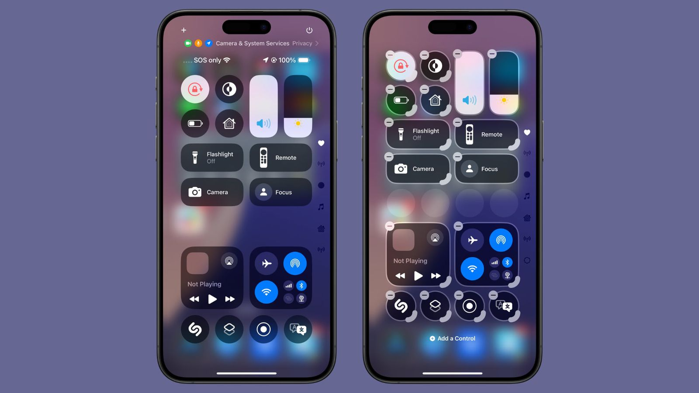

AirDrop on iPhone is a feature that lets you wirelessly send photos, videos, documents, and more to nearby Apple devices (iPhone, iPad, or Mac) quickly and easily, using Bluetooth and Wi-Fi.
2. Face id
Face ID is Apple's facial recognition technology that securely unlocks your iPhone or iPad, authenticates purchases, and signs in to apps with just a glance.
3. Shortcuts
Apple Shortcuts are a powerful automation tool that allows users to create custom workflows by combining actions from different apps, streamlining tasks and saving time with just a tap or by asking Siri.

4. AirPlay
AirPlay is Apple's wireless streaming technology that allows you to share videos, photos, music, and more from Apple devices to Apple TV, AirPlay-compatible smart TVs, speakers, and even in select hotel rooms

5. Control Center
The iPhone Control Center is a quick-access panel that allows you to toggle settings and launch apps with a swipe, offering instant access to features like Airplane Mode, Wi-Fi, Bluetooth, Do Not Disturb, and more.

Why is Apple better than other brands?
Apple products are often perceived as "better" due to their strong brand reputation, seamless ecosystem, user-friendly interface, and focus on quality and design, though these are subjective and depend on individual needs and preferences.
.png)